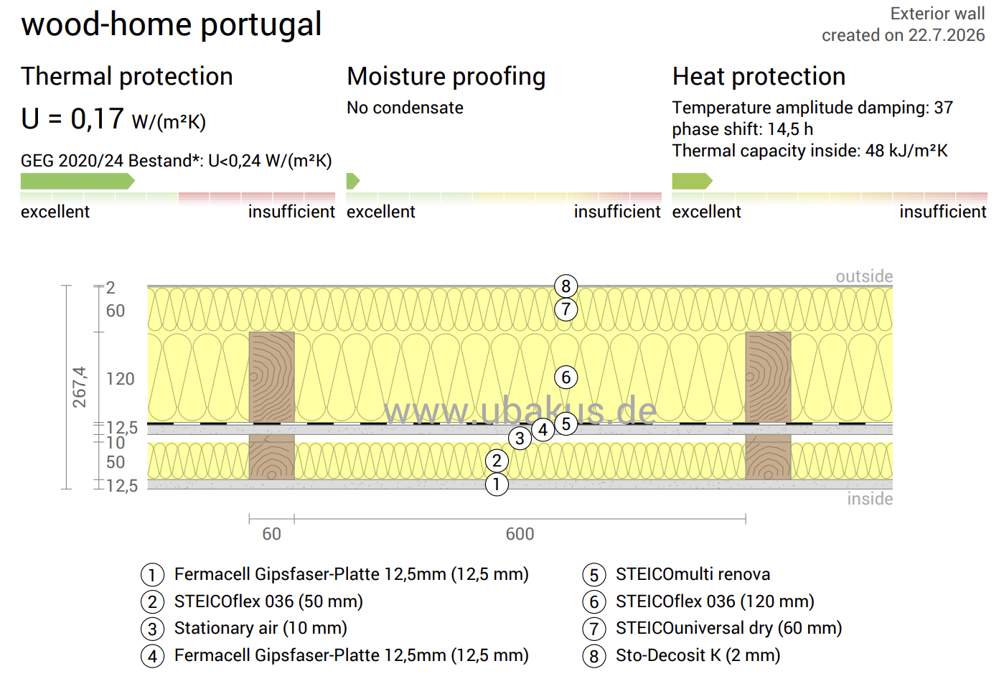
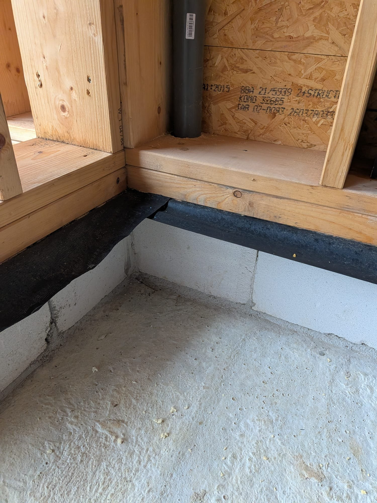
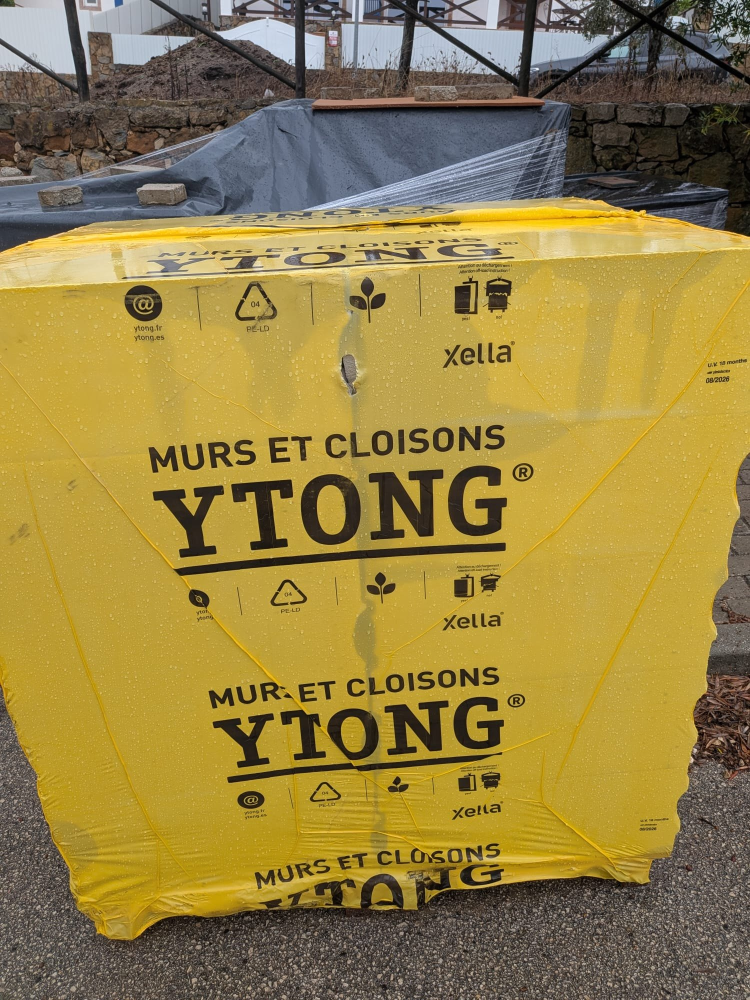

Wood Home technical file
Wood Home (Jaworzno, Poland) manufactures the prefabricated timber frame panels and assembles the structure on site. Source for this page: Wood Home offer 26244v6 of 3 Sep 2026 (scope pages) and the wall profile calculation of 22 Jul 2026. Both are in the documents at the bottom of the page.

External wall build up
Ubakus calculation "wood-home portugal", exterior wall, 22 Jul 2026.
| Layer, interior to exterior | Product | Thickness |
|---|---|---|
| 1. Interior lining | Fermacell gypsum fibre board | 12.5 mm |
| 2. Service cavity insulation | STEICOflex 036 | 50 mm |
| 3. Air layer | Stationary air | 10 mm |
| 4. Board | Fermacell gypsum fibre board | 12.5 mm |
| 5. Vapour control | STEICOmulti renova membrane | |
| 6. Structural frame and main insulation | KVH 60x120 with STEICOflex 036 | 120 mm |
| 7. Exterior wood fibre board | STEICO dry board | 60 mm |
| 8. Render | Sto Decosit K | 2 mm |
- Total thickness
- 267.4 mm
- U value
- 0.17 W/m²K
- Phase shift
- 14.5 h
- Temperature amplitude damping
- 37
- Moisture
- No condensate
The exterior board is named STEICOuniversal dry in the calculation and STEICOspecial dry in the offer. To confirm
Scope in the offer
- Structural engineering design
- Shop drawings for the prefabricated elements
- Complete as built documentation
- Braas ceramic roof tiles with sheet metal flashings, on battens and counter battens
- Complete steel guttering down to ground level
- Dorken Universal XX breather membrane
- Certified KVH timber structure, sections per the structural design
- 12.5 mm Fermacell board each side
- KVH 60x120 frame with 80 mm STEICOflex 036
- OSB3 22 mm structural board
- Certified KVH timber, sections per the structural design
- H2O Fermacell board
- OSB3 25 mm structural board
- KVH roof joists per structural calculations
- Fermacell board and STO plaster system
- Horizontal damp proof course beneath the ground floor walls
- Perimeter sealing between building and foundation with EPDM membrane
- Corrugated conduits pre-installed in the walls for electrical wiring, with pre-cut holes for back boxes
Windows and doors as listed in the offer
- Salamander Prestige bE82/MD PVC windows, triple glazing, RAL compliant warm installation, Uw from 0.74 W/m²K, Ug 0.5 W/m²K. Includes 4 HST lift and slide doors, with tint.
- Wooden entry door Doorsy Meduno, 100 mm leaf, with a sidelight.
- Motorised Aluprof external roller shutters on 2 HST and 1 side window, with sliding mosquito doors on those 3 openings.
- Aluminium external window sills, minimum overhang 40 mm.
An Aluron AS75 aluminium window product sheet is also on file below. Which window system is in the signed specification: To confirm
Also included
- Transport to site, fasteners and hardware, assembly.
- Fakro loft ladder. Temporary site staircase.
- Wooden eaves soffit and visible wooden elements, painted with the Flugger system.
- Arches in STEICOspecial dry with STO plaster system. Wooden pergola over the balcony.
- Termite protection: mesh barrier.
The offer also lists a Schiedel prefabricated chimney. The chimney was removed from the scope afterwards.
Delivered state
- Building weather tight and secured from the outside, complete set of windows and doors.
- Interior finished with Fermacell boards. Corrugated conduits for electrical wiring pre-installed.
- Facade with STO plaster system, without the final decorative plaster finish.
Not in Wood Home's scope
- Foundation ready
- Scaffolding for the duration of the assembly
- Crane for the duration of the assembly
- Accommodation for the assembly crew (usually 4 to 5 people for about 5 days)
- Site toilet
- Water and electricity supply
- Hardened access road to the site
- Railings, stairs, decorative facade elements (stone, timber, boards)
- Electrical, water and sewage installations, central heating, ventilation
- Insulation and concrete screeds, floor slabs
- Sanitary installations
- Plasterboard lining to ceilings and roof
The crane is hired by Bacofra with an operator and handed to the Wood Home assembly crew, with a lifting plan agreed with the Wood Home site lead. Crane specification in writing: Open
Base of the timber panels To confirm with Wood Home


After the visit to Jelle on 10 Nov 2026, we want to use YTONG blocks under the wood panels.
To confirm with Wood Home, Gonçalo and the structural engineer: how this fits with the sole plate, the damp proof course, the EPDM perimeter sealing and the termite mesh listed in the offer, and the level of the slab.
Timber protection against termites Decided
- Factory borate pressure impregnation of the structural studs.
- Stainless steel 316 mesh barrier under the sole plates and around pipe penetrations, at the junction between the concrete slab and the timber frame.
- Pipe and duct penetrations through the sole plate are mapped before the mesh goes down, so it is cut correctly. Coordinated with Gonçalo before the panels arrive.
Points we asked Wood Home to confirm in writing Open
- Thermal and moisture analysis of the wall by the structural engineer, with bridging correction.
- STO render warranty on the STEICO exterior board.
- Window positioning detail in the wall section.